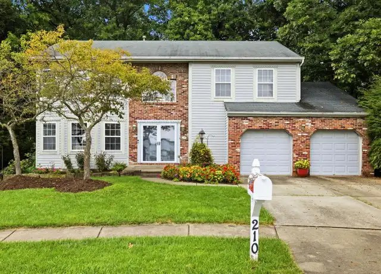

House search update
Thursday, November 5, 2026
No new homes met the search criteria this time, but two homes we sent earlier dropped their prices. Drive times are in minutes to Woodbine (Cranberry), then Foxwood (Mars), then Broadway (Wexford). They assume no traffic. Rush hour will probably add 10-25%.
PRICE DROPS ON EARLIER HOMES

01. 210 Trail Ct W, Cranberry Twp (Kingsbrook), Butler County - $489,000 (was $524,900, down $35,900) [PRICE DROP]
First sent Oct 23 at $524,900. Now 43 days on the market.
4 bed / 2.5 bath, 2,550 sq ft, built 1996, 0.62 ac wooded lot that backs to a golf course
Unfinished basement, 2-car garage, updated kitchen. It is marketed as having "potential," so it needs some work.
The new price is well under budget, which leaves room for updates.
Drive: 8 / 19 / 19. Closest to Woodbine; a little over 19 min to the other two.

02. 9239 Marshall Rd, Cranberry Twp (Marshall Woods), Butler County - $534,900 (was $549,900, down $15,000) [PRICE DROP]
First sent Oct 23 at $549,900. Now 22 days on the market.
4 bed / 3.5 bath, 2,944 sq ft, built 2003, 0.26 ac lot
Finished lower level with a game room, flex room and full bath, plus a 2-car garage. HOA is $75 a quarter.
This is one of the roomiest homes on the list and now sits comfortably inside the budget. The lot is small.
Drive: 10 / 14 / 14. About 14 min to all three.
STATUS
707 Dunbury Ct is still pending, and 211 Katherine Dr and 130 Woodbine Dr are still contingent. Every other home from earlier updates is still active at its last price.
New listings I looked at and left out: 387, 388 and 376 Leslie Farms Dr in Evans City (new construction, about 22-32 min from the anchors) and 103 Horizon Ct in Valencia ($574,900, about 27 min to Woodbine).
Earlier updates
- Friday, October 30, 2026 (1 new home, 2 status changes)
- Thursday, October 29, 2026 (4 new homes, 2 changes)
- Monday, October 26, 2026 (1 new home)
- Friday, October 23, 2026 (first list, 13 homes)
Prepared by your PA house search assistant
Photos are from the public Redfin listings.